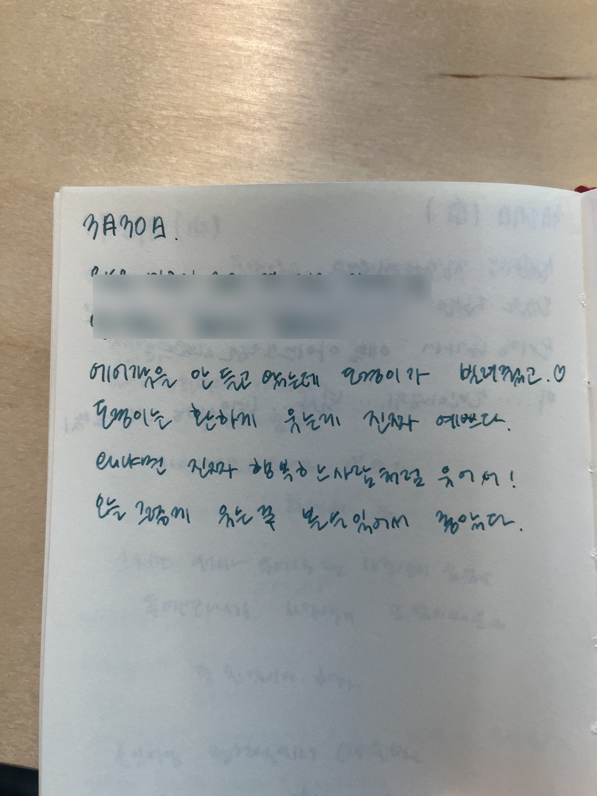
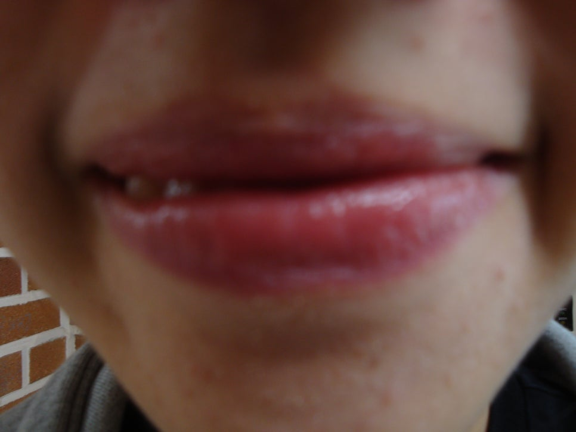
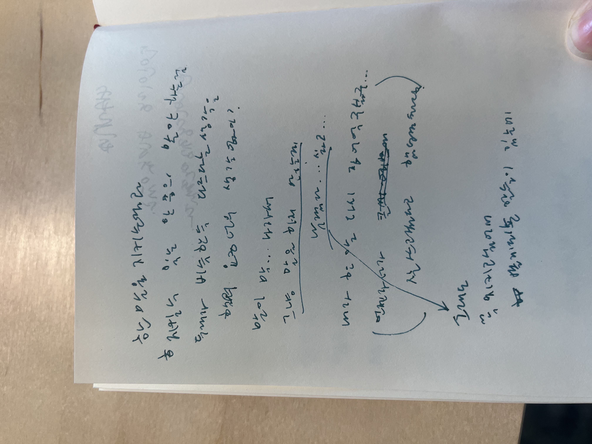
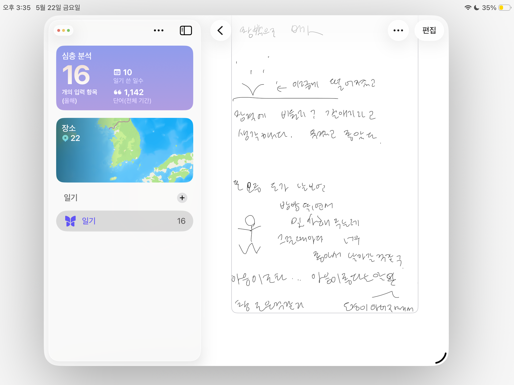
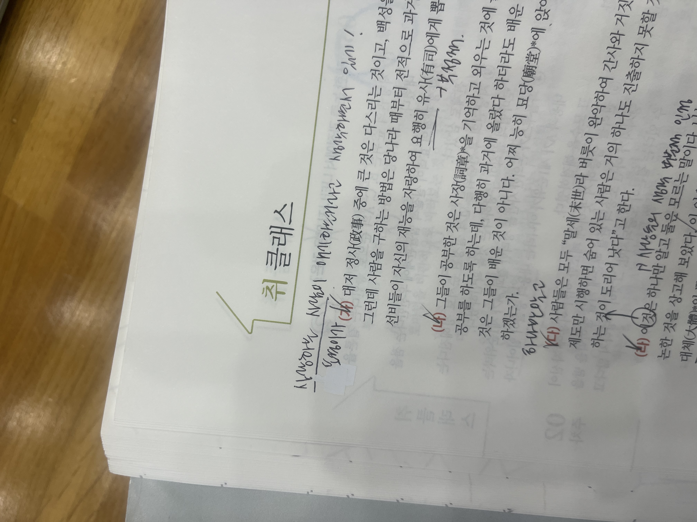
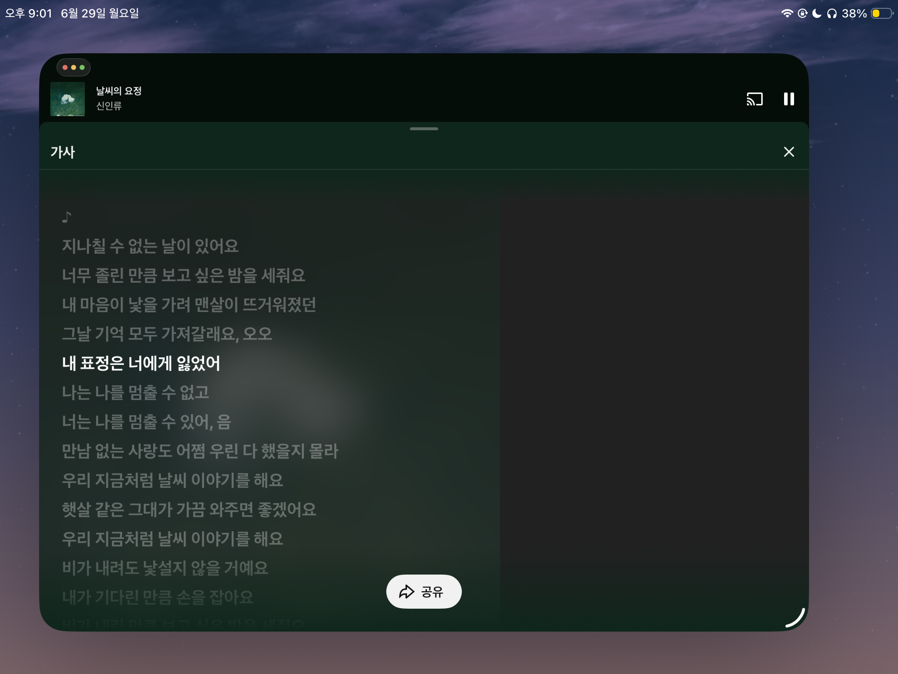
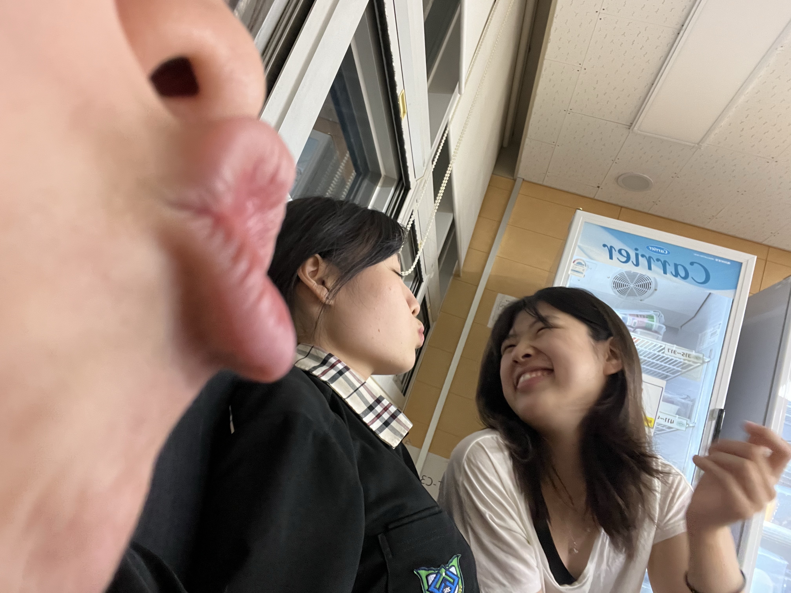

- sa
- rang
- hae
rang

260330
에어팟을 학교에 안들고왔는데 도경이가 빌려줬고
도경이는 환하게 웃는게 진짜 예쁘다
왜냐면 진짜 행복한 사람처럼 웃어서!
오늘 그렇게 웃는 걸 볼 수 있어서 좋았다


260428
뱉은 말을 지키는것과 지킬 수 있는 만큼의 말만 하는 것
두 개가 비슷하듯 다른 것 같다는 생각을 했고...
고삼이라서그런가? 요즘 말이 너무 생각 없이 나가서
그냥 말을 하지 않는 게 낫겠다 싶을때도 많아
그래도 꼭 지키고싶어서 뱉게되는 말들이 있는데
너 생일 케이크에 초 백게 꽂을때까지 옆에 있을게
같은 거

260520
요즘 도가 날 보면 방방 뛰면서 인사해주는데
그럴때마다 너 무 좋아서 날아갈것같구
마음이좋다!
마음이 좋다는 말은 도경이 아버지꼐서 하신 말씀을 도경이가 전해준건데
참 좋은 말인 것 같다
그치만! 방방 뛰지 않아도 좋아! 웃지 않아도 좋아!
짜증내고 틱틱대도 좋아

260522
너가 하는 말은 빠짐없이 귀기울여 듣고싶어!
내가 고민상담 이런거 진짜 못하는데
그래도 들어주는 건 잘 할 수 있다!
언제든 털어놓고 싶을때는 내게로 와
나도 너한테 힘(F)이 되구싶다

260629
내가 가장! 예쁘다고 생각하는 가사
사랑이 이런거겠지 싶었고

진짜였다